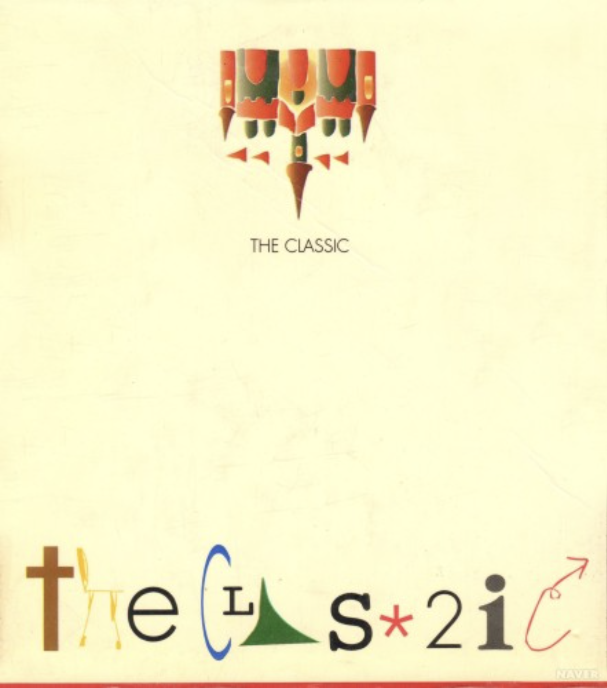
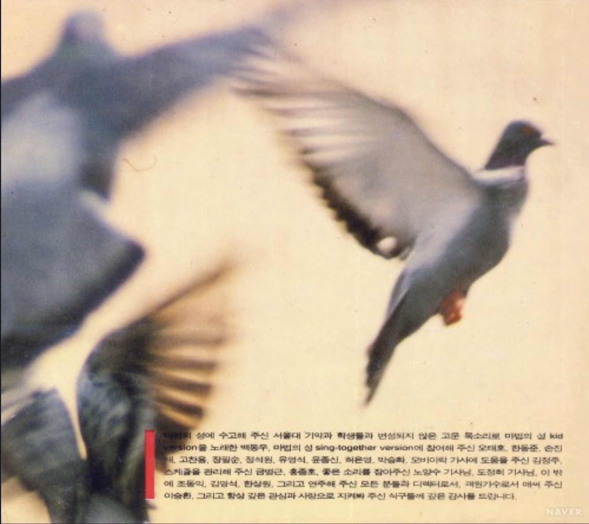
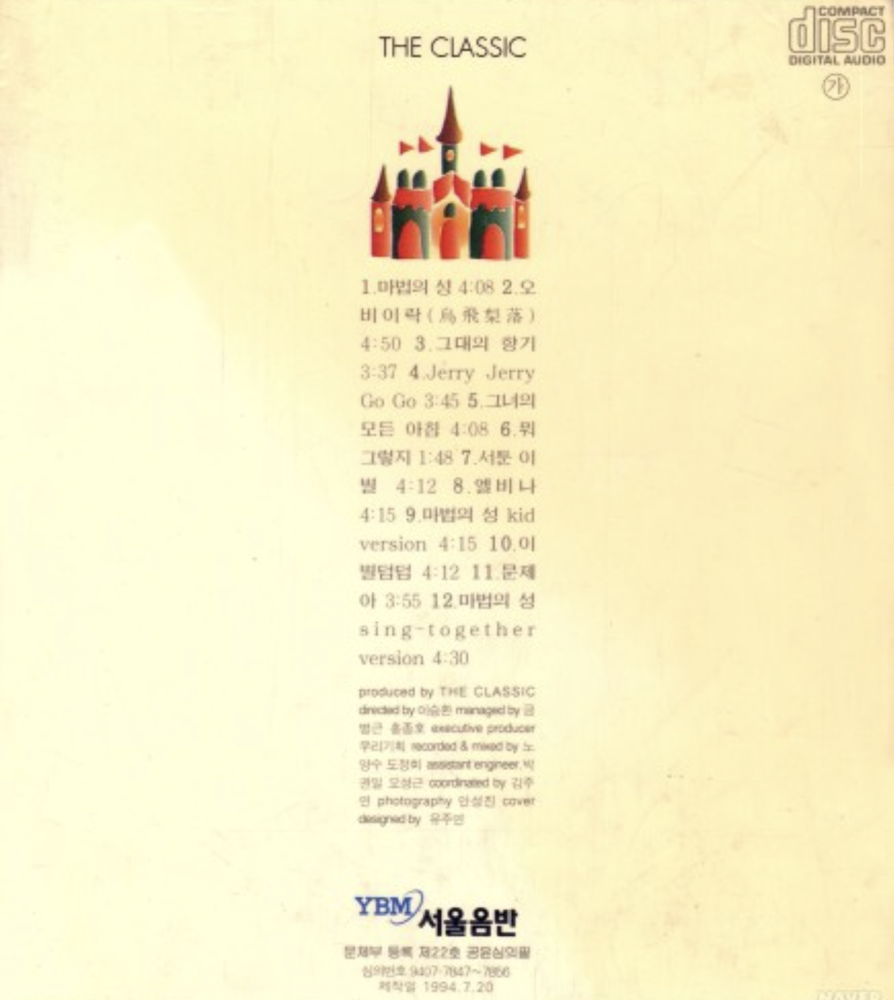

마법의 성
<1994>
가수 소개
더 클래식은 김광진과 박용준으로 이루어진 감성 팝 듀오로, 세련된 발라드와 재즈·포크 감성을 담은 음악으로 사랑받았다. ‘마법의 성’, ‘여우야’, ‘편지’ 등의 명곡을 남겼으며, 김광진의 대중적인 작곡 감각과 박용준의 섬세한 편곡·프로듀싱이 조화를 이루며 오랫동안 기억되는 음악을 만들어냈다.
앨범소개
더 클래식의 데뷔 앨범으로, 클래식 악기와 감성적인 발라드를 결합한 세련된 사운드가 특징이다. 타이틀곡 ‘마법의 성’은 아름다운 멜로디와 희망적인 가사로 큰 사랑을 받으며 세대를 대표하는 명곡이 되었고, 중학교 음악 교과서에도 수록되었다. 김광진의 뛰어난 작곡 감각과 박용준의 섬세한 편곡이 돋보이는 작품이다.
🎵


